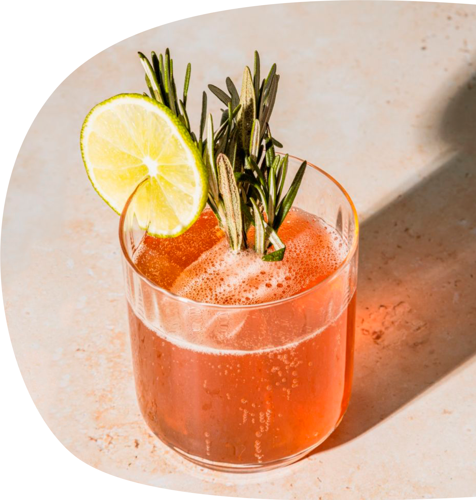
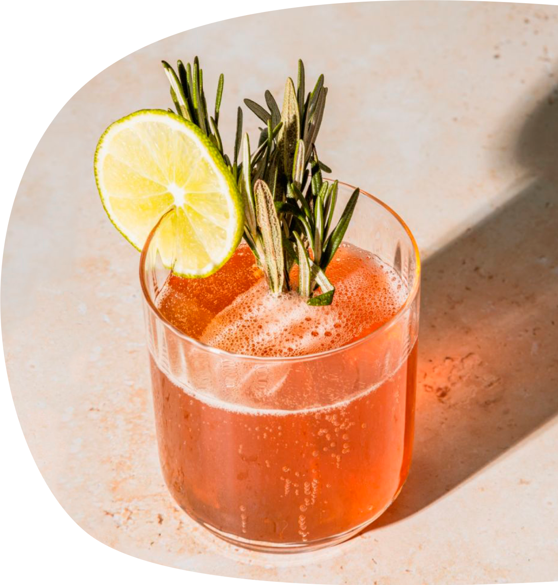
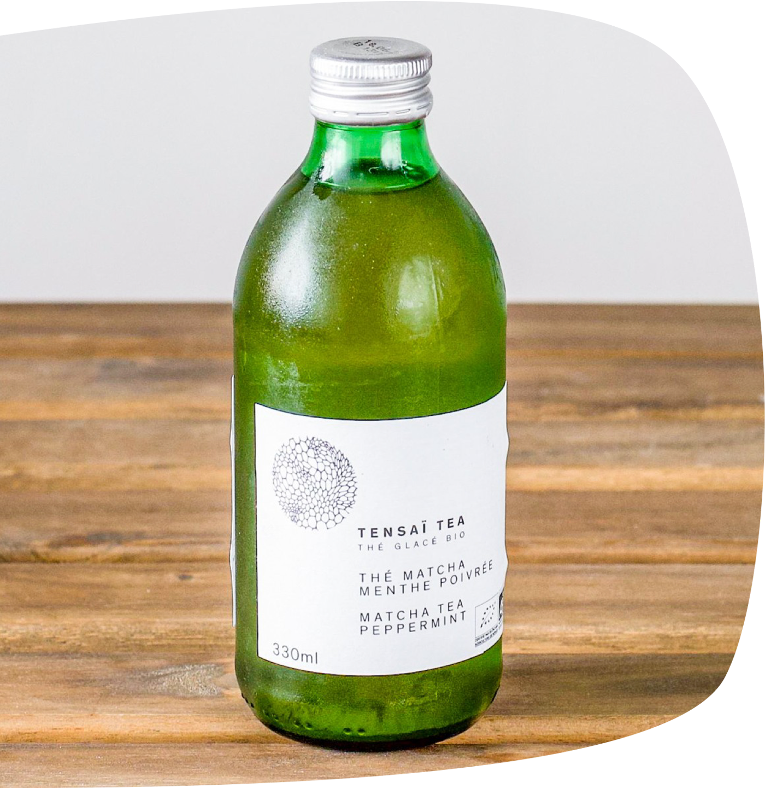
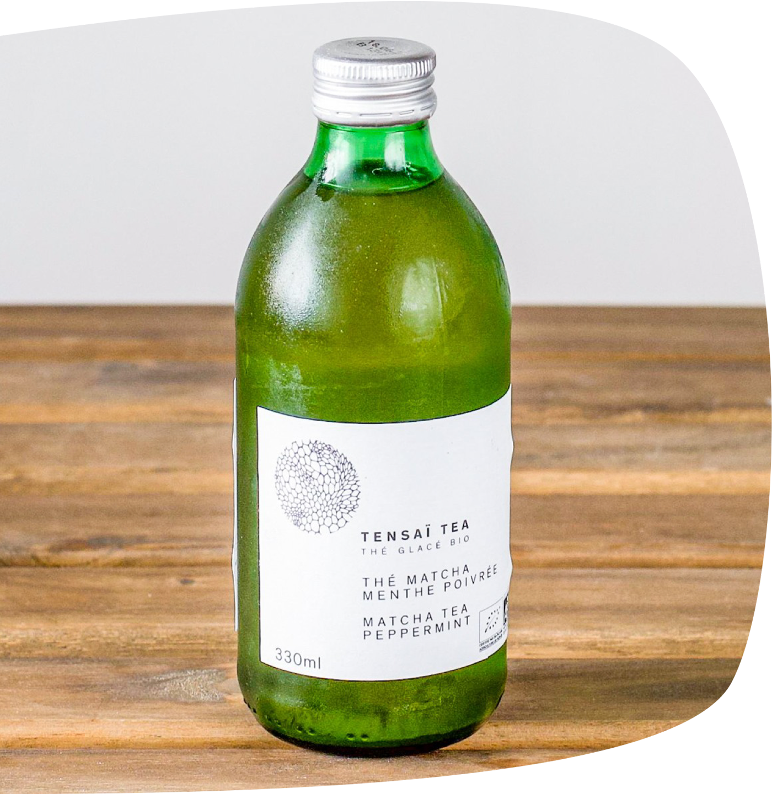

leamo
Chez Leamo on propose une gamme de boissons pétillantes et rafraîchissantes. Notre assortiment, réfléchi pour vos envies, compte des softs traditionnels, des crafts mixers et même un cola. Et par ce qu’on se préoccupe de votre santé, les breuvages Leamo sont bio, moins sucrés et peuvent être consommés sans alcool.

Notre engagement
Pour rafraîchir vos papilles, les softs Leamo sont issus de
recettes naturelles.
Un sourcing éthique est valorisé pour utiliser des ingrédients de
qualité qui offrent une authenticité particulière aux saveurs de
nos boissons.
 

Cocktails
Leamo revisite à nouveau ses classiques avec une gamme de craft
mixers.
Soucieux du respect des techniques de fabrication traditionnelles,
Leamo réalise toutes ses recettes avec des ingrédients bio et de
première qualité.
 

à la découverte des produits alterfood
Tensaï Tea
Tensaï Tea a été créé pour offrir un moment d’harmonie, de respect, de pureté et de sérénité, à l’image de la cérémonie du thé.